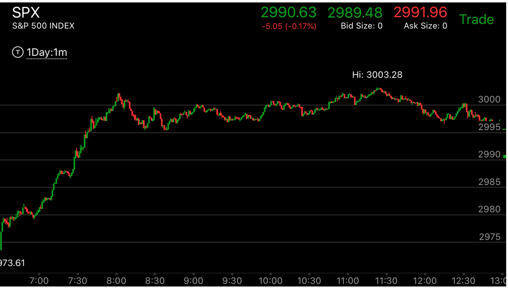
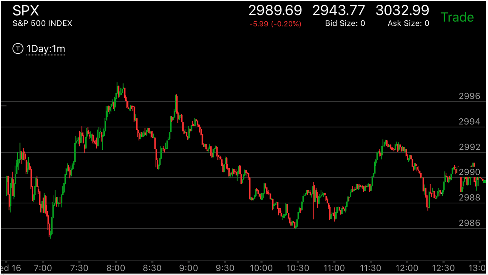

开盘后第一浪的效果在升势或跌势的作用
如果第一浪和趋势一样，那么当天在趋势和第一浪的带动下大幅运动。如果不一样。或者是出现了反方向的极点。那么当天可能波澜不惊。

图示：大盘处于升势，一开盘就是明显的上升浪，幅度很大。这样当天就开始大涨，幅度很大，一路上在各个阻力点。 包括盘前形成的，或者是前几天形成的阻力点不断的走平后，上涨。

图示：大盘处于升势，结果它开盘后，创新低，然后出现了贯通走势。这样当天就基本打平了。